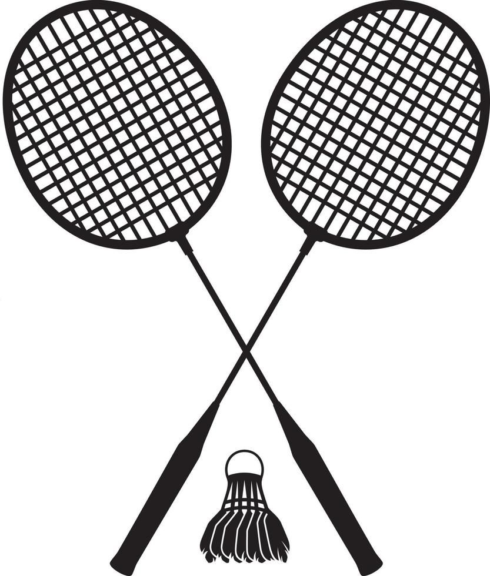
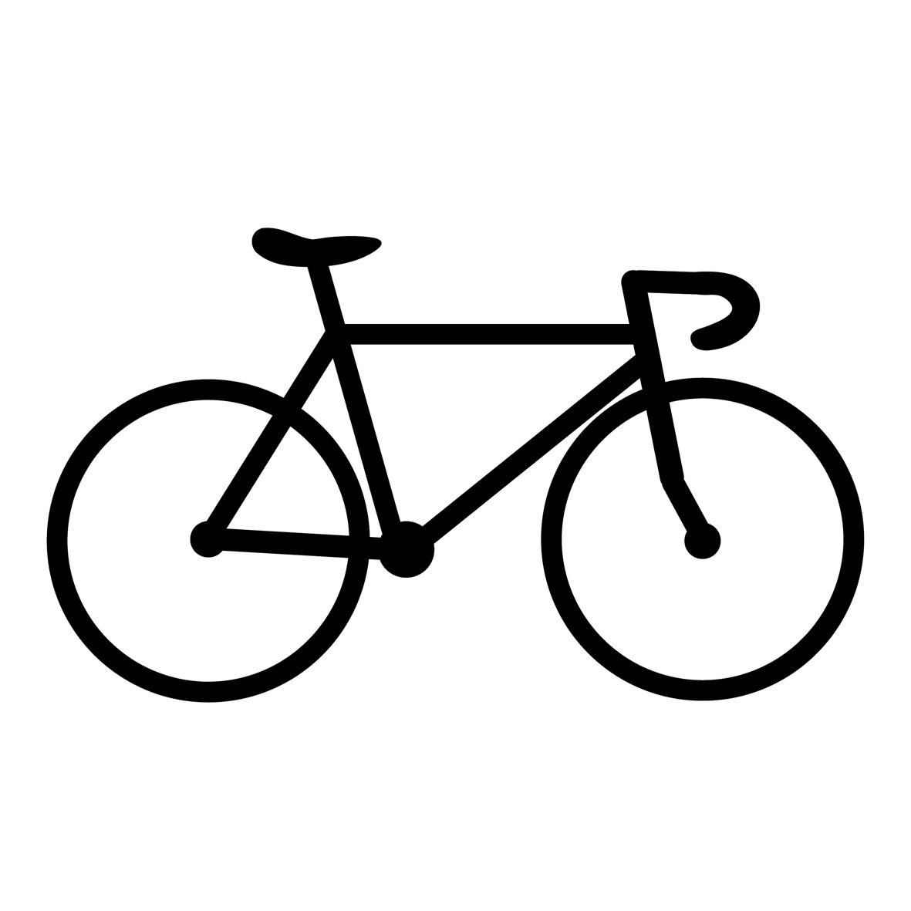
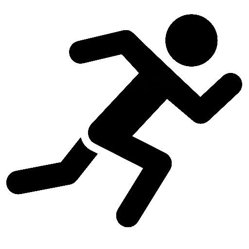

Berolahraga
Setiap orang pasti punya hobi yang bisa bikin mereka senang dan semangat. Bagi saya, hobi yang paling saya sukai adalah berolahraga. Saya suka berolahraga karena bisa membuat tubuh jadi lebih sehat, pikiran lebih segar, dan semangat belajar meningkat. Selain itu, olahraga juga membantu saya menghilangkan rasa stres setelah seharian beraktivitas.
Bagi saya, berolahraga bukan cuma soal bergerak, tapi juga tentang menjaga kesehatan dan kedisiplinan diri. Saat berolahraga, saya belajar untuk konsisten, semangat, dan nggak mudah menyerah. Kegiatan ini juga mengajarkan saya pentingnya kerja sama, sportivitas, dan menghargai orang lain.
Melalui olahraga, saya juga mendapatkan banyak teman baru dan pengalaman yang menyenangkan. Kami saling memberi semangat, belajar kerja sama, dan menikmati waktu bersama. Hal itu membuat olahraga terasa lebih seru dan bermanfaat.
Saya percaya bahwa berolahraga adalah kebiasaan positif yang harus dijaga. Dengan tubuh yang sehat, saya bisa lebih fokus dalam belajar dan menjalani aktivitas sehari-hari. Karena itu, saya akan terus menjadikan olahraga sebagai bagian dari gaya hidup saya agar selalu sehat, bahagia, dan penuh energi.
Olahraga Favorit Saya
  